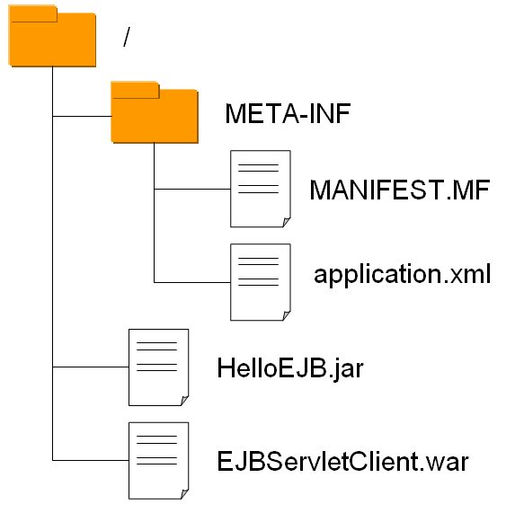
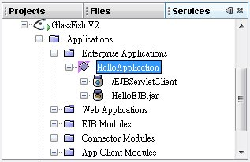

| 您可以把所有的Java EE元件封裝為一個EAR檔案，也就是Enterprise Archive，以 使
用 @EJB 注入 Bean（Servlet 客戶端） 為例，封裝完成的EAR檔基本上會有以下的東西：  上面顯示了EAR中有一個EJB模組，一個Web模組，除此之外，EAR檔中還可以包括應用程式客戶端模組（Application client module）以及資源配接模組（Resource adapter module）。 application.xml可有可無，若沒有，則自動將EAR中的jar、war進行部署，若您需要額外設定一些部署資訊，則可以使用application.xml定義，例如您可以撰寫如下：
<?xml version="1.0" encoding="UTF-8"?> 若要自行建立EAR檔，一樣是使用jar工具程式，例如，您可以建一個build目錄，一個dist目錄，在build目錄中建一個META-INF目錄，將application.xml放到其中，將jar、war放在build下，然後在build目錄下指令： jar cvf ../dist/HelloApplication.ear ./*
如此建立出來的EAR內容就如上圖所示，您就可以直接部署到容器上，部署後的畫面在NetBeans+Glassfish就如下所示：  |